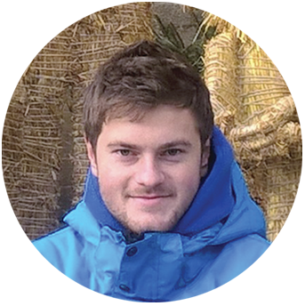

Ing. Pavol Pločica
About me
I am ambitious. I like to learn new things and I am not affraid of new
chalenges. I would like to work in Information technology company, where
I can grow up personally and educationally. I would like to participate
in interesting projects.
My personal qualities
- responsibility
- ambition
- flexibility
- sense od humour
- honesty
My hobbies
- sport
- nature
- traveling
- beekeeping
- education
- TV documents
Contact info
Adress: Májová 301/7, 044 23, Jasov
Date of birth: January 8, 1993
Mobil: +421917041883
E-mail:
pali.plocica@gmail.com
Education
2008 - 2012
Secondary Veterinary School, Košice-Barca, field of study: Veterinary Health and Hygiene: Dog breeding
2012 - 2015
University of Veterinary medicine and Pharmacy in Košice, field of study: Cynology (Bachelor´s study)
2015 - 2017
Slovak University of Agriculture in Nitra, field of
study: Animal Production Management (engineering study)
Work experience
2017 - 2018
AC Paňovce
work position: Zootechnicist job
description: coordination and organisation of work in animal production, teamleading, care and treatment of animals, administration
2018 - 2019
ORTOPROplus, s.r.o.
work position: ortopedic technician job description: communication with people manufacture of ortopedic appliances, measurement and aplication of ortopedic appliances
2019 - 2021
self-employed person
Computer skills
- MS Office - expert
- HTML - intermediate
- CSS - intermediate
- Javascript - beginner
- automatic testing - beginner
- manually testing - beginner
Language skills
- English language B1
- Russian language A2
Other
- driving licence group B
- Dean's Award for Best Diploma Thesis
- graduate of beekeeping course in SOSBANBB